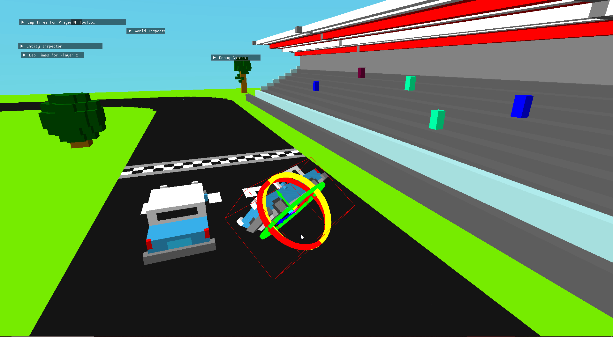
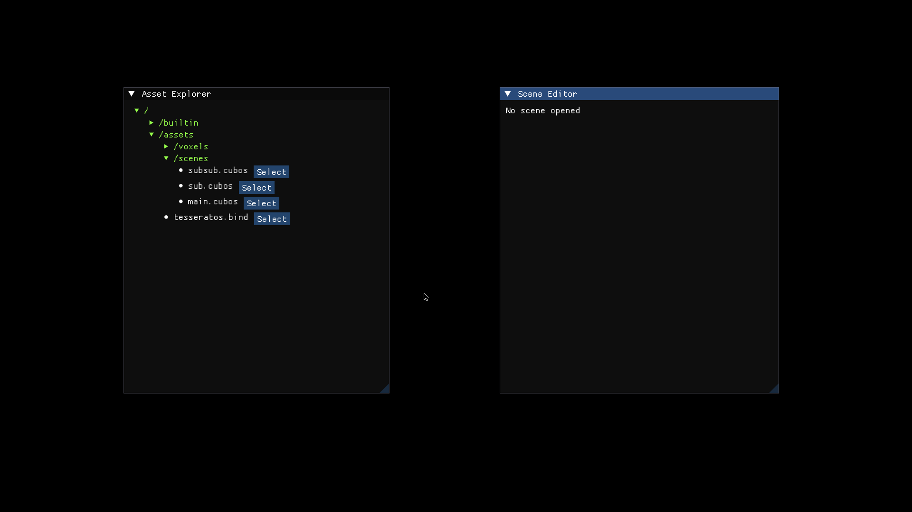
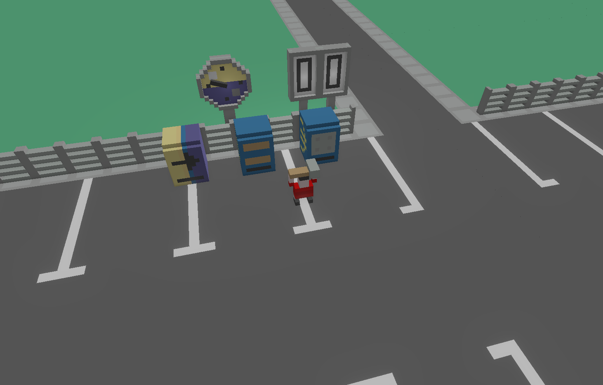

From ECS observers and fixed-time step support to better editing tools, a new modular rendering pipeline, and the first physics constraints solvers.
New 0.2 Features
Our focus on this release was to continue working on improving and implementing base functionality, such as rendering and physics, and also to improve on the tools available to the developer. We've compiled here some of the most important changes (if you're curious, you can check out the full changelog in our repository).
On the Editor
Transform Gizmo Upgrades (@DiogoMendonc-a)
The biggest change was the addition of a rotation gizmo, so now you can rotate entities using your mouse!
We also added a toggle that allows changing between using global or local space with the Transform Gizmo,
and a new type of gizmo, a Rotated Box, which, unlike the old boz gizmos, does not need to be axis-aligned.
Finally, the transform gizmo is now always rendered at the same size, regardless of the selected entity's distance to the camera. This should hopefully make it easier to use the tool when moving entities either very far away, or very close.
World Inspector Overhaul (@diogomsmiranda)
The World inspector has been on our radar for quite some time now, as a tool that could be improved. This release we particularly aimed on making it better by focusing on:
- Making it easier to find the entities you are looking for.
- Displaying more information about the entities in the scene.
To tackle the first point we've added a search bar that allows you to filter the entities in the scene, either by their name, or by their components. e.g:
- Searching for "player" will show all entities that have "player" in their name.
- Searching for "Transform" will show all entities that have a
Transformcomponent. - Searching for "player, Transform" will show all entities that have a
Transformcomponent and contain "player" in their name.
To tackle the second point on our list we added an hierarchy view that shows the entities in the scene in a tree-like structure representing the ChildOf relation between entities.
Sub-scene importing in scene editor (@teres4)
Previously our scene editor was lacking support for importing sub-scenes. This meant that developers had to manually open the scene file and paste the sub-scene UUID in its import section. To save time, we've added a popup that shows all the importable sub-scenes, and allows the developer to select the one they want to import.
On the Engine
Physics Improvements (@fallenatlas)
This update we introduced the Solver, which works to satisfy the physics constraints applied to entities (e.g. Spring, Fixed distance between entities, etc.).
This means that the developers can now give entities any number of constraints, either engine defined or their own, and the solver will handle their expected interaction.
As of now, we have one constraint, internal to the engine, the PenetrationConstraint, which separates bodies that are inside each other, and comes in to replace our previous collision solving system.
With the ability to have repeating systems, it was possible to introduce the physics substeps loop, which will perform the physics update in multiple smaller steps. This is important to increase the convergence rate of the solver and preservation of energy, by reducing the errors caused by approximations of the simulation.
These changes should lead to more realistic behavior, as well as better consistency between systems with different performance levels.

Modular Renderer (@RiscadoA, @tomas7770)
Before this update, our graphics renderer was very monolithic, with a lot of the code being held in a single file. This posed some problems, namely that if we wanted to implement new rendering methods in the future (e.g. raytracing), we would end up with tons of duplicate code. It also didn't fit well with our ECS design, since things such as the renderer and its active cameras were just global resources.
To overcome this, we've restructured the renderer, splitting it into several components with their respective plugins. The most important ones
are perhaps RenderTarget, representing something that can be drawn to, and PerspectiveCamera, which draws to render targets using perspective projection.
Entities with these components are related using a DrawsTo relation. There are also components that individually enable various parts of the renderer,
such as deferred shading, or effects like bloom and SSAO. This separation opens up possibilities for more customizability from the user side,
and makes the renderer code easier to deal with by engine developers.
We also used the opportunity to optimize the renderer, namely, by allocating a large GPU buffer for all the voxel meshes, which we then split into smaller buckets. This way, we can draw all the voxel objects with fewer draw calls, and with way less context switches. One other feature we improved greatly was entity picking - finding out which entity is visible at a given pixel. Previously, enabling it cut the framerate by more than half, which was unacceptable. By using Pixel Buffers and double-buffering, we managed to make its performance impact negligible.
Additionally, we added a tone-mapping pass to the renderer, which makes better use of the HDR color space. It allows us to tune the exposure of the scene, and also to apply effects like bloom and SSAO in a more realistic way. One side-effect of us changing the color-space is that now the colors in the game are a bit more washed out. We'll have to go back and tweak the colors in the game to make them look good again.
On the Core
Clearer Plugin Dependencies (@RiscadoA)
One of the main features of Cubos is its plugin system. We structure all of the engine and editor features as plugins, each with its own set of components, systems, and resources. The developer ultimately chooses which plugins to include in their game, and may also create their own plugins.
Plugins may depend on each other. One example is the physics plugin, which depends on the collisions plugin. Previously, when a plugin was included, all of its dependencies were automatically included. It was also possible to include a plugin twice - the second time, the plugin would simply be ignored.
While this seems useful, this led to some problems. Since a plugin could be included more than once, there isn't a single place where its safe to make decisions about how a given plugin should behave. This was particularly problematic with the new modular renderer plugins.
Imagine a scenario where we have two plugins A and B, which implement different rendering methods. A and B are incompatible. Adding both should be an error, as it's impossible to have both rendering methods active at the same time. Additionally, A and B both add on a plugin C, and make decisions about how C should behave. If both A and B are included, which one should have the final say? How do we specify the dependency between them without coupling their code?
Our solution to this was to distinguish between depending and including a plugin. When a plugin X depends on a plugin Y, adding X without Y being present leads to an error. When a plugin X includes a plugin Y, including X will also include Y. But, if a plugin is included twice, an error occurs. This way, we get a clean plugin hierarchy, which is easier to reason about:
void myPlugin(Cubos& cubos) { cubos.depends(renderVoxelsPlugin); // Don't care about internals, just need the plugin cubos.plugin(mySubPlugin); // Include a sub-plugin, which becomes part of my plugin // ... }
One issue with this solution is that you would now have to manually include all plugins you need when making a game. Of course, this is not ideal, and thus, we've added a new defaults plugin to the engine that includes all the plugins that are necessary for a basic game to run. If the developer wants to configure the engine in a different way, they can simply write their own alternative defaults plugin.
Observers (@RiscadoA)
Very often while working with Cubos, we find the need to react to the addition and removal of components in entities.
One use case, for example, is setting up the AABB of an entity when we add a collider to it.
Previously, we had to manually implement this logic, for example, by adding a flag to the collider which was initially false, and having a system initializing all colliders with the flag set to false.
To solve this problem in a more elegant way, we added a new special kind of system: observers. Observers are essentially systems which instead of running on a specific schedule, run immediately after a certain change occurs in the ECS (akin to callbacks).
We also found another unexpected use for this feature. Complex plugins with lots of components, such as the physics plugin, where previously cumbersome to work with, as all the required components had to be manually added to each entity we wanted physics to apply to.
With observers, we instead now add a single component PhysicsBundle. An observer picks up this addition, and immediately replaces this component with all of the required components for the physics plugin to work.
If you're interested in learning more about this feature and ECS in general on our engine, check out our ECS feature guide.
Introducing Inheritance in Reflection (@roby2014)
Cubos has a powerful reflection system to examine and interact with a structures and types at runtime
It works by attaching metadata to types, which we call traits. These traits can be queried at runtime to get information about the type.
For example, we provide a FieldsTrait, which you can add to a type to expose its fields to the reflection system.
One thing we were missing was information about inheritance relationships between types.
We've added a new trait, InheritsTrait, which allows you to specify that a type inherits from another type.
This will be particularly useful for serialization, as right now we have to manually add the fields of the base class to the derived class. Now, serializers can check if this trait is present and fallback to the base class if necessary.
Repeating Systems and Fixed-Step Updates (@joaomanita)
Certain plugins, like the physics plugin, required some of their systems to run multiple times per frame so that they could make more accurate aproximations. In addition, some of them need to be executed in ordered groups. For example:
- The integration system needs to run before the velocity update system.
- The velocity update system needs to run before the force clear system.
- The force clear system needs to run before the impulse clear system.
To allow repeating groups such as these, we added a new feature to the ECS tags: the repeat while modifier. This makes the systems tagged by it repeat until a certain condition becomes false.
cubos.tag(groupTag).repeatWhile(myCondition); cubos.system("integrate physics").tagged(groupTag)./* ... */; cubos.system("update velocity").tagged(groupTag)./* ... */; cubos.system("clear forces").tagged(groupTag)./* ... */;
Its also possible to make repeating subgroups by tagging the subgroup with the parent tag.
cubos.tag(subgroupTag).tagged(groupTag).repeatWhile(myOtherCondition);
This way the subgroup's systems will repeat a total of n x m times, where n is the number of times the parent tag repeats and m is the number of times the subgroup tag repeats.
With this implemented, it was easy to implement the fixed-step plugin on the engine side. It simply adds a tag that makes systems repeat as needed according to
the DeltaTime passed, avoiding variance due to different frame rates and more/less powerful PCs.
Moving Away from the Old Serialization (@Dacops)
Serialization is a crucial part of the game engine that allows for the saving of any Cubos game components as well as then loading them in. Previously, serialization was done through a series of functions, both for reading and writing, that could be overloaded for each type. On the previous (and first) release, we introduced a reflection system, that allowed for the inspection of types at runtime. This was an essential step to make the inspectors on the editor side work.
But with this new system, we now had two sources of truth for the types, the reflection system and the serialization system. To solve this, we decided to change the serialization system to use the reflection system, and thus, not force the developer to write serialization code for each type.
On this release, we've finally finished this transition, by replacing serialization by direct stream manipulation in places where performance was more of a concern, such as voxel object saving/loading; and by replacing the serialization methods by reflection in other places, such as the input bindings.
Next Steps
We're very happy with the progress we've made on this release. The engine is becoming more and more powerful, and we were able to create a full game with it in a week!
For the next release, which should be out in July, we'll be focusing on expanding the engine's capabilities, as it is currently missing some key features, such as:
- A standalone editor application. Our tools are currently integrated into the games themselves which is not ideal.
- Audio support, as there's no sound at all in the engine right now.
- An initial UI plugin, which can render images, text and handle buttons.
- Actual voxel collisions, as we currently only check the bounding boxes.
- Basic rigidbody physics, with rotation and friction.
- Shadows, transparency and other rendering features.
- Raycasting.
- Networking utilities, to allow for online multiplayer games.
- Web-support, so that games can be played in the browser.
- C API, so that we can use the engine from other languages (scripts!).
- Better editor tools.
You can check out the full list of stuff we want to get done in the milestone for the next release.
We're currently a team of 10 people, and we're looking to expand! If you're interested in joining us, or just want to learn more about the project, join our Discord server!